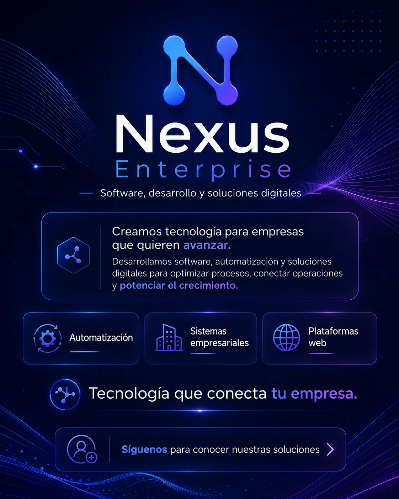

Software a medida
ERP, CRM, paneles administrativos, inventario, ventas, operaciones, control interno, aplicaciones de escritorio y herramientas especializadas.
Trabajamos desde páginas web y automatizaciones hasta plataformas completas de operación empresarial.

ERP, CRM, paneles administrativos, inventario, ventas, operaciones, control interno, aplicaciones de escritorio y herramientas especializadas.
Web corporativa, landing page, tienda, catálogo, portal privado, panel de clientes, documentación y experiencias interactivas.
Aplicaciones para escritorio y experiencias web instalables, enfocadas en productividad y procesos reales.
Flujos automáticos, mensajería, formularios, alertas, integraciones y reducción de tareas repetitivas.
Conectamos sistemas, servicios externos, bases de datos y herramientas para evitar procesos aislados.
Correcciones, nuevas funciones, mejoras visuales y evolución técnica de soluciones existentes.
Nosotros convertimos el problema en una propuesta técnica y comercial.